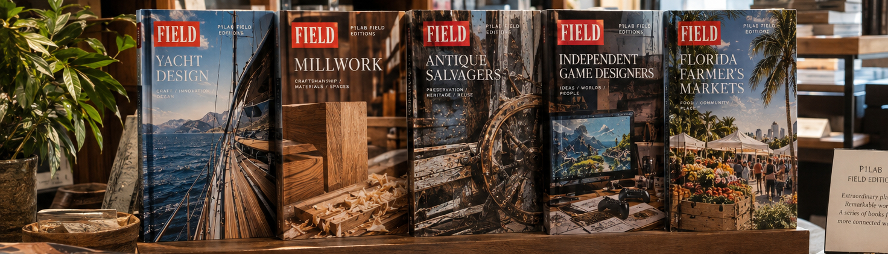
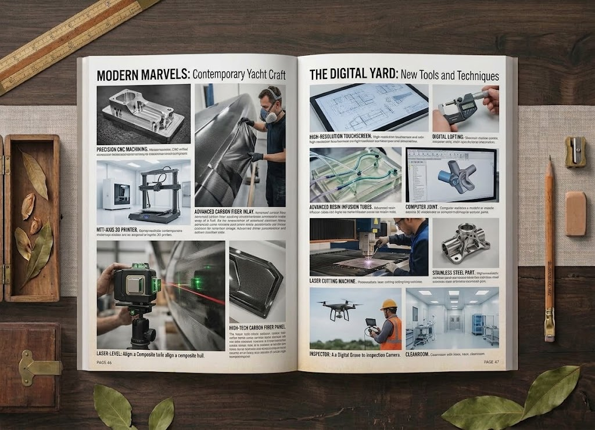
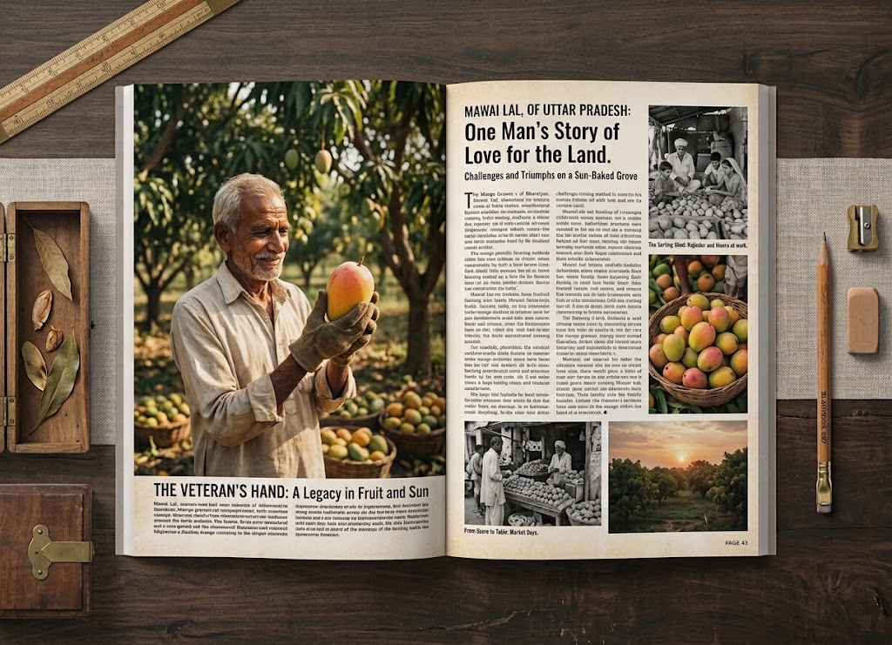

Let the photograph lead.
Full-bleed documentary images invite the reader into a place or practice before the text begins.
FIELD / A P1Lab Collection
FIELD is a curated collection of collectible books about remarkable work and the worlds around it—from specialist businesses and makers to places, products, practices, and knowledge worth passing on.
For readers, each volume is an inviting field guide to a subject worth knowing. For selected partners, it becomes a lasting record of what they know and do: a book to sell, share, give, and keep in circulation—published as part of a wider collection and available to order internationally.
FIELD / The Collection
FIELD brings together carefully edited, collectible field guides to distinctive businesses, makers, places, products, practices, and specialist knowledge—the parts of everyday life and work that reward a closer look.
Each volume stands on its own: a book to browse, read, keep, give, and return to. Together, they form a growing library of places to know, people to meet, objects to understand, and ideas worth passing along.
A volume might recall somewhere you have visited, introduce a remarkable maker, or guide you towards a place you hope to go. FIELD treats everyday expertise as culture, giving each subject the time, imagery, and editorial care it deserves.
FIELD / The books, together
Every volume has its own photographic identity and editorial character. A shared format, masthead, and print sensibility bring the collection together—on a shelf and in a reader’s hands.

Composite mockup featuring generative background imagery and photographs of books designed in Inkscape and Adobe InDesign. Cover designs and page layouts are original P1Lab work. Cover subjects and page lengths are illustrative; individual volumes may vary in thickness.
Inside the volumes
Documentary photography, edited text, captions, diagrams, and practical detail work together. Each book is more than a brochure or catalogue: it is an engaging record of a subject, made to be browsed, read, used, and kept.

Every specialist practice carries a history: decisions, tools, materials, and skills that become visible when someone takes the time to look closely.
014How it works, what is made there, who knows it best, and what a visitor should notice.

Design comps. P1Lab's editorial design draws on two complementary traditions: the systematic grids of Swiss graphic design and the photograph-led storytelling of the great American picture magazines of the mid-twentieth century. Modular structure, disciplined typography, variable image scale, and carefully sequenced photography create pages that are coherent without being uniform. The developing programme takes further reference from Alexey Brodovitch and Bradbury Thompson, and from foundational design texts by Josef Müller-Brockmann, Allen Hurlburt, and Emil Ruder.
FIELD / Why it looks this way
FIELD deliberately draws on the visual language of mid-to-late twentieth-century illustrated print: LIFE, TIME-LIFE books, National Geographic, and American Sunday magazine inserts. These publications brought serious subjects to a broad readership through vivid photography, confident headlines, useful captions, and a rhythm that invited browsing.
This is not nostalgia for its own sake. We are carrying that generous, accessible print tradition into contemporary subjects—to make books that are rich without being crowded, informative without feeling encyclopedic, and considered without becoming austere.
Full-bleed documentary images invite the reader into a place or practice before the text begins.
Headlines, captions, short essays, and useful details build understanding in clear, inviting steps.
Images, materials, history, and human decisions work together: enough context to understand the subject, with room for the reader to discover it.
Contemporary in purpose. Rooted in the art of printed storytelling.
Beyond the bookshelf
A FIELD book can be read for pleasure, used as a field guide, kept as a record, or passed along as a gift. For the businesses and makers featured, it can also introduce their work to customers, clients, journalists, and new audiences.
Give visitors and customers something tangible to take home—a small, lasting purchase connected to a place or business they value.
Use copies for prospective clients, valued customers, suppliers, collaborators, trade meetings and events.
Send it to journalists and writers, or let it move from shelf to shelf, introducing your work to people beyond your immediate audience.
A book can remain on a desk or coffee table long after an email or social post has disappeared—an enduring expression of what makes your business distinctive.
The pleasure of collecting
FIELD becomes more than a row of titles. It is a record of interests, encounters, places visited, and places still to discover.
The editorial territory
From traditional craft to emerging creative work, from specialist products to working landscapes, FIELD treats the material world as culture. The subjects vary; the respect does not. Each volume has its own editorial purpose; the collection connects them through curiosity, clarity, and care.
Distinctive companies, independent makers, specialist operations, and the accumulated knowledge that makes their work worth understanding.
Working landscapes, specialist destinations, material traditions, and places best understood through the people who know them.
Tools, instruments, materials, objects, and specialist knowledge documented with clarity, context, and lasting usefulness.
Participate in FIELD
FIELD works with selected businesses, makers, specialists, and institutions to turn their work, knowledge, images, and history into a collectible, carefully edited book. Each title belongs to the wider FIELD collection while retaining a distinctive identity of its own. It can be sold on site, given to clients, shared with the press, and made available for international ordering.
Collection participation
Copies can be sold to visitors, used to introduce your work to prospective clients, given to customers and collaborators, or shared with journalists. Over time, a book can build visibility and goodwill—but its first job is to make your work understood and remembered.
The title is also made available for order through IngramSpark's international distribution network. This creates a route for readers and booksellers to discover and order the book; it does not guarantee physical bookstore stocking or sales.
Participation includes four finished copies. You may purchase additional copies at an agreed wholesale price and retain the proceeds from your own resale.
| Edition | Length | Scope |
|---|---|---|
| Short | 48–64 pages | For a focused subject with an established body of source material |
| Standard | 80–96 pages | For a broader subject with more material to organise and present |
| Extended | 120–150 pages | For a substantial subject requiring a fuller editorial treatment |
Participation fees are discussed after reviewing the subject and available material.
Participation covers editorial development, selection and organisation of source material, image preparation, captions, typography, page design, ISBN and print-ready files. The final editorial plan and page count are confirmed after reviewing the available material. New photography, interviews, fieldwork, substantial original research, exceptional restoration and third-party licensing can be scoped separately.
Retail earnings are paid to the partner. P1Lab reports sales quarterly and remits the net distribution compensation received for the title, less the agreed administration fee per completed retail copy sold. Quarterly statements account for reported sales, compensation, fees, returns and adjustments. Funds not yet received from the distributor carry forward and are paid when received. There is no advance, no guaranteed sales, and the participation fee is not recouped against retail earnings.
Your intellectual property remains yours. Your participation funds the editorial and publishing work; P1Lab's role is to create the book, publish the collection and manage distribution.
Discuss participation in FIELDA separate route
For businesses with substantial photographs, project records, product materials, technical knowledge, or company history—or projects that call for a more bespoke treatment—P1Lab also produces commissioned books. We develop the structure, edit and shape the material, design the publication, and prepare it for print.
The client retains agreed commercial rights and the revenue from book sales; P1Lab is paid to produce the book and does not take a share of sales. Commissioning a book is a separate engagement and does not automatically determine editorial selection for the curated collection.
Discuss a commissioned bookDocumentary fieldwork
Where the story cannot be told from an existing archive alone, P1Lab undertakes deeper documentary work: on-site research, observation, interviews, photography, and the documentation of processes, materials, facilities, and place.
A Field Record may become the basis of a book or a broader documentary publication. Its purpose is to create a reliable, carefully shaped account of a subject that deserves more than a passing description.
Our approach
Every project begins with the subject and the reader: what is distinctive about this world, what is worth understanding, and what kind of book will serve it well.
We work from existing material wherever possible, then identify what additional research, interviews, or photography would add. The aim is a real book with a clear point of view—not a sales page transferred to paper.
Start a conversation
Have a subject worth knowing? Tell us a little about your business, collection, place, product, or specialist knowledge. We will suggest the relevant publishing route and outline what would be involved.
Website Image Disclosure
Website imagery may include documentary photography, illustrations, composites, reconstructions, mockups, and generative imagery. These visuals communicate the FIELD publication's intended character and scope; they are not necessarily documentary evidence.
The FIELD publication is different. Published photographs will document actual places, materials, processes, and activities. Generative imagery will not be presented as documentary evidence.
The website presents the project; the publication records the field.